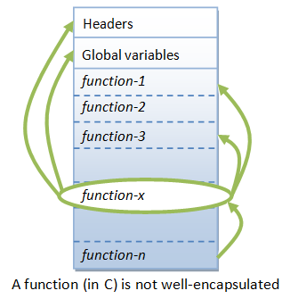
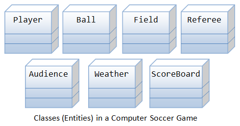
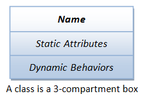
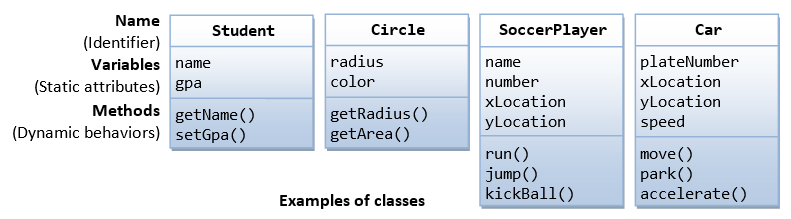
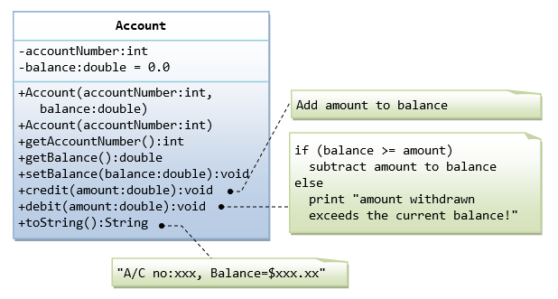
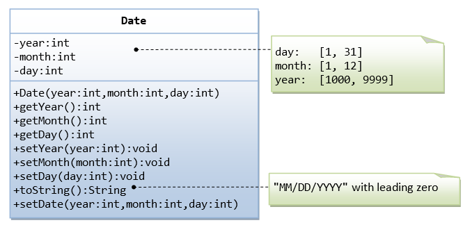
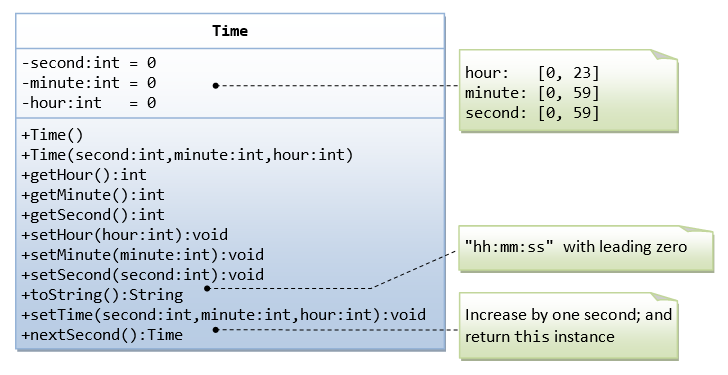
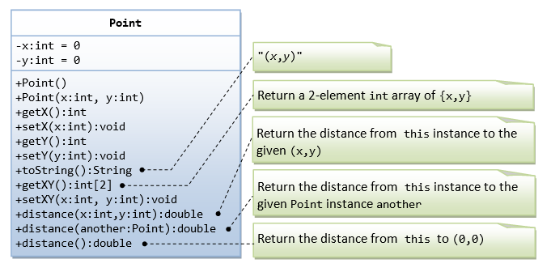
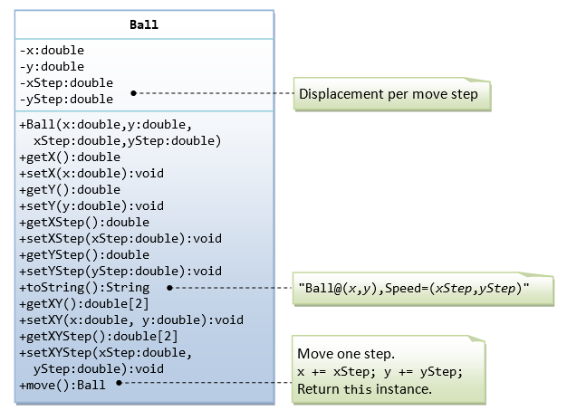
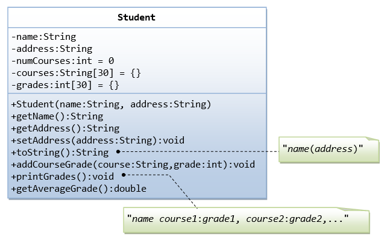

Why OOP?
Suppose that you want to assemble your own PC, you go to a hardware store and pick up a motherboard, a processor, some RAMs, a hard disk, a casing, a power supply, and put them together. You turn on the power, and the PC runs. You need not worry whether the CPU is 1-core or 6-core; the motherboard is a 4-layer or 6-layer; the hard disk has 4 plates or 6 plates, 3 inches or 5 inches in diameter; the RAM is made in Japan or Korea, and so on. You simply put the hardware components together and expect the machine to run. Of course, you have to make sure that you have the correct interfaces, i.e., you pick an IDE hard disk rather than a SCSI hard disk, if your motherboard supports only IDE; you have to select RAMs with the correct speed rating, and so on. Nevertheless, it is not difficult to set up a machine from hardware components.
Similarly, a car is assembled from parts and components, such as chassis, doors, engine, wheels, brake and transmission. The components are reusable, e.g., a wheel can be used in many cars (of the same specifications).
Hardware, such as computers and cars, are assembled from parts, which are reusable hardware components.
How about software? Can you "assemble" a software application by picking a routine here, a routine there, and expect the program to run? The answer is obviously NO! Unlike hardware, it is very difficult to "assemble" an application from software components. Since the advent of computer 70 years ago, we have written tons and tons of programs and routines. However, for each new application, we have to re-invent the wheels and write the program from scratch!
Why re-invent the wheels? Why re-writing codes? Can you write better codes than those codes written by the experts?
Traditional Procedural-Oriented languages
Traditional procedural-oriented programming languages (such as C, Fortran, Cobol and Pascal) suffer some notable drawbacks in creating reusable software components:
- The procedural-oriented programs are made up of functions. Functions are less reusable. It is very difficult to copy a function from one program and reuse in another program because the function is likely to reference the global variables and other functions. In other words, functions are not well-encapsulated as a self-contained reusable unit.
- The procedural languages are not suitable of high-level abstraction for solving real life problems. For example, C programs uses constructs such as if-else, for-loop, array, method, pointer, which are low-level and hard to abstract real problems such as a Customer Relationship Management (CRM) system or a computer soccer game.
The traditional procedural-languages separate the data structures (variables) and algorithms (functions).
In the early 1970s, the US Department of Defense (DoD) commissioned a task force to investigate why its IT budget always went out of control; but without much to show for. The findings are:
- 80% of the budget went to the software (with the remaining 20% to the hardware).
- More than 80% of the software budget went to maintenance (only the remaining 20% for new software development).
- Hardware components could be applied to various products, and their integrity normally did not affect other products. (Hardware can share and reuse! Hardware faults are isolated!)
- Software procedures were often non-sharable and not reusable. Software faults could affect other programs running in computers.
The task force proposed to make software behave like hardware OBJECT. Subsequently, DoD replaces over 450 computer languages, which were then used to build DoD systems, with an object-oriented language called Ada.
Object-Oriented Programming Languages

Object-oriented programming (OOP) languages are designed to overcome these problems.
- The basic unit of OOP is a class, which encapsulates both the static properties and dynamic operations within a "box", and specifies the public interface for using these boxes. Since classes are well-encapsulated, it is easier to reuse these classes. In other words, OOP combines the data structures and algorithms of a software entity inside the same box.
- OOP languages permit higher level of abstraction for solving real-life problems. The traditional procedural language (such as C and Pascal) forces you to think in terms of the structure of the computer (e.g. memory bits and bytes, array, decision, loop) rather than thinking in terms of the problem you are trying to solve. The OOP languages (such as Java, C++ and C#) let you think in the problem space, and use software objects to represent and abstract entities of the problem space to solve the problem.

As an example, suppose you wish to write a computer soccer games (which I consider as a complex application). It is quite difficult to model the game in procedural-oriented languages. But using OOP languages, you can easily model the program accordingly to the "real things" appear in the soccer games.
- Player: attributes include name, number, location in the field, and etc; operations include run, jump, kick-the-ball, and etc.
- Ball:
- Reference:
- Field:
- Audience:
- Weather:
Most importantly, some of these classes (such as Ball and Audience) can be reused in another application, e.g., computer basketball game, with little or no modification.
Benefits of OOP
The procedural-oriented languages focus on procedures, with function as the basic unit. You need to first figure out all the functions and then think about how to represent data.
The object-oriented languages focus on components that the user perceives, with objects as the basic unit. You figure out all the objects by putting all the data and operations that describe the user's interaction with the data.
Object-Oriented technology has many benefits:
- Ease in software design as you could think in the problem space rather than the machine's bits and bytes. You are dealing with high-level concepts and abstractions. Ease in design leads to more productive software development.
- Ease in software maintenance: object-oriented software are easier to understand, therefore easier to test, debug, and maintain.
- Reusable software: you don't need to keep re-inventing the wheels and re-write the same functions for different situations. The fastest and safest way of developing a new application is to reuse existing codes - fully tested and proven codes.
OOP in Java
Class & Instances
In Java, a class is a definition of objects of the same kind. In other words, a class is a blueprint, template, or prototype that defines and describes the static attributes and dynamic behaviors common to all objects of the same kind.
An instance is a realization of a particular item of a class. In other words, an instance is an instantiation of a class. All the instances of a class have similar properties, as described in the class definition. For example, you can define a class called "Student" and create three instances of the class "Student" for "Peter", "Paul" and "Pauline".
The term "object" usually refers to instance. But it is often used loosely, and may refer to a class or an instance.
A Class is a 3-Compartment Box Encapsulating Data and Operations
A class can be visualized as a three-compartment box, as illustrated:
- Name (or identity): identifies the class.
- Variables (or attribute, state, field): contains the static attributes of the class.
- Methods (or behaviors, function, operation): contains the dynamic behaviors of the class.
In other words, a class encapsulates the static attributes (data) and dynamic behaviors (operations that operate on the data) in a box.
The followings figure shows a few examples of classes:
The following figure shows two instances of the class Student, identified as "paul" and "peter".
Unified Modeling Language (UML) Class and Instance Diagrams: The above class diagrams are drawn according to the UML notations. A class is represented as a 3-compartment box, containing name, variables, and methods, respectively. Class name is shown in bold and centralized. An instance is also represented as a 3-compartment box, with instance name shown as instanceName:Classname and underlined.
Brief Summary
- A class is a programmer-defined, abstract, self-contained, reusable software entity that mimics a real-world thing.
- A class is a 3-compartment box containing the name, variables and the methods.
- A class encapsulates the data structures (in variables) and algorithms (in methods). The values of the variables constitute its state. The methods constitute its behaviors.
- An instance is an instantiation (or realization) of a particular item of a class.
Class Definition in Java
In Java, we use the keyword class to define a class. For examples:
public class Circle { // class name
double radius; // variables
String color;
double getRadius() { ...... } // methods
double getArea() { ...... }
}
public class SoccerPlayer { // class name
int number; // variables
String name;
int x, y;
void run() { ...... } // methods
void kickBall() { ...... }
}
The syntax for class definition in Java is:
[AccessControlModifier] class ClassName {
// Class body contains members (variables and methods)
......
}
We shall explain the access control modifier, such as public and private, later.
Class Naming Convention: A class name shall be a noun or a noun phrase made up of several words. All the words shall be initial-capitalized (camel-case). Use a singular noun for class name. Choose a meaningful and self-descriptive classname. For examples, SoccerPlayer, HttpProxyServer, FileInputStream, PrintStream and SocketFactory.
Creating Instances of a Class
To create an instance of a class, you have to:
- Declare an instance identifier (instance name) of a particular class.
- Construct the instance (i.e., allocate storage for the instance and initialize the instance) using the "
new" operator.
For examples, suppose that we have a class called Circle, we can create instances of Circle as follows:
// Declare 3 instances of the class Circle, c1, c2, and c3 Circle c1, c2, c3; // They hold a special value called null // Construct the instances via new operator c1 = new Circle(); c2 = new Circle(2.0); c3 = new Circle(3.0, "red"); // You can Declare and Construct in the same statement Circle c4 = new Circle();
When an instance is declared but not constructed, it holds a special value called null.
Dot (.) Operator
The variables and methods belonging to a class are formally called member variables and member methods. To reference a member variable or method, you must:
- First identify the instance you are interested in, and then,
- Use the dot operator (
.) to reference the desired member variable or method.
For example, suppose that we have a class called Circle, with two member variables (radius and color) and two member methods (getRadius() and getArea()). We have created three instances of the class Circle, namely, c1, c2 and c3. To invoke the method getArea(), you must first identity the instance of interest, says c2, then use the dot operator, in the form of c2.getArea().
For example,
// Suppose that the class Circle has variables radius and color, // and methods getArea() and getRadius(). // Declare and construct instances c1 and c2 of the class Circle Circle c1 = new Circle (); Circle c2 = new Circle (); // Invoke member methods for the instance c1 via dot operator System.out.println(c1.getArea()); System.out.println(c1.getRadius()); // Reference member variables for instance c2 via dot operator c2.radius = 5.0; c2.color = "blue";
Calling getArea() without identifying the instance is meaningless, as the radius is unknown (there could be many instances of Circle - each maintaining its own radius). Furthermore, c1.getArea() and c2.getArea() are likely to produce different results.
In general, suppose there is a class called AClass with a member variable called aVariable and a member method called aMethod(). An instance called anInstance is constructed for AClass. You use anInstance.aVariable and anInstance.aMethod().
Member Variables
A member variable has a name (or identifier) and a type; and holds a value of that particular type (as descried in the earlier chapter).
Variable Naming Convention: A variable name shall be a noun or a noun phrase made up of several words. The first word is in lowercase and the rest of the words are initial-capitalized (camel-case), e.g., fontSize, roomNumber, xMax, yMin and xTopLeft.
The formal syntax for variable definition in Java is:
[AccessControlModifier] type variableName [= initialValue]; [AccessControlModifier] type variableName-1 [= initialValue-1] [, type variableName-2 [= initialValue-2]] ... ;
For example,
private double radius; public int length = 1, width = 1;
Member Methods
A method (as described in the earlier chapter):
- receives arguments from the caller,
- performs the operations defined in the method body, and
- returns a piece of result (or
void) to the caller.
The syntax for method declaration in Java is as follows:
[AccessControlModifier] returnType methodName ([parameterList]) {
// method body or implementation
......
}
For examples:
// Return the area of this Circle instance
public double getArea() {
return radius * radius * Math.PI;
}
Method Naming Convention: A method name shall be a verb, or a verb phrase made up of several words. The first word is in lowercase and the rest of the words are initial-capitalized (camel-case). For example, getArea(), setRadius(), getParameterValues(), hasNext().
Variable name vs. Method name vs. Class name: A variable name is a noun, denoting an attribute; while a method name is a verb, denoting an action. They have the same naming convention (the first word in lowercase and the rest are initial-capitalized). Nevertheless, you can easily distinguish them from the context. Methods take arguments in parentheses (possibly zero arguments with empty parentheses), but variables do not. In this writing, methods are denoted with a pair of parentheses, e.g., println(), getArea() for clarity.
On the other hand, class name is a noun beginning with uppercase.
Putting them Together: An OOP Example

A class called Circle is defined as shown in the class diagram. It contains two private member variables: radius (of type double) and color (of type String); and three public member methods: getRadius(), getColor(), and getArea().
Three instances of Circles, called c1, c2, and c3, shall be constructed with their respective data members, as shown in the instance diagrams.
The source codes for Circle.java is as follows:
Circle.java
1 2 3 4 5 6 7 8 9 10 11 12 13 14 15 16 17 18 19 20 21 22 23 24 25 26 27 28 29 30 31 32 33 |
/* * The Circle class models a circle with a radius and color. */ public class Circle { // Save as "Circle.java" // Private instance variables private double radius; private String color; // Constructors (overloaded) public Circle() { // 1st Constructor radius = 1.0; color = "red"; } public Circle(double r) { // 2nd Constructor radius = r; color = "red"; } public Circle(double r, String c) { // 3rd Constructor radius = r; color = c; } // Public methods public double getRadius() { return radius; } public String getColor() { return color; } public double getArea() { return radius * radius * Math.PI; } } |
Compile "Circle.java" into "Circle.class".
Notice that the Circle class does not have a main() method. Hence, it is NOT a standalone program and you cannot run the Circle class by itself. The Circle class is meant to be a building block - to be used in other programs.
TestCircle.java
We shall now write another class called TestCircle, which uses the Circle class. The TestCircle class has a main() method and can be executed.
1 2 3 4 5 6 7 8 9 10 11 12 13 14 15 16 17 18 19 20 21 22 23 24 |
/* * A Test Driver for the "Circle" class */ public class TestCircle { // Save as "TestCircle.java" public static void main(String[] args) { // Program entry point // Declare and Construct an instance of the Circle class called c1 Circle c1 = new Circle(2.0, "blue"); // Use 3rd constructor System.out.println("The radius is: " + c1.getRadius()); // use dot operator to invoke member methods System.out.println("The color is: " + c1.getColor()); System.out.printf("The area is: %.2f%n", c1.getArea()); // Declare and Construct another instance of the Circle class called c2 Circle c2 = new Circle(2.0); // Use 2nd constructor System.out.println("The radius is: " + c2.getRadius()); System.out.println("The color is: " + c2.getColor()); System.out.printf("The area is: %.2f%n", c2.getArea()); // Declare and Construct yet another instance of the Circle class called c3 Circle c3 = new Circle(); // Use 1st constructor System.out.println("The radius is: " + c3.getRadius()); System.out.println("The color is: " + c3.getColor()); System.out.printf("The area is: %.2f%n", c3.getArea()); } } |
Compile TestCircle.java into TestCircle.class.
Run the TestCircle and study the output:
The radius is: 2.0 The color is: blue The area is: 12.57 The radius is: 2.0 The color is: red The area is: 12.57 The radius is: 1.0 The color is: red The area is: 3.14
Constructors
A constructor is a special method that has the same method name as the class name. In the above Circle class, we define three overloaded versions of constructor Circle(......). A constructor is used to construct and initialize all the member variables. To construct a new instance of a class, you need to use a special "new" operator followed by a call to one of the constructors. For example,
Circle c1 = new Circle(); Circle c2 = new Circle(2.0); Circle c3 = new Circle(3.0, "red");
A constructor is different from an ordinary method in the following aspects:
- The name of the constructor method is the same as the class name. By classname's convention, it begins with an uppercase (instead of lowercase for ordinary methods).
- Constructor has no return type. It implicitly returns
void. Noreturnstatement is allowed inside the constructor's body. - Constructor can only be invoked via the "
new" operator. It can only be used once to initialize the instance constructed. Once an instance is constructed, you cannot call the constructor anymore. - Constructors are not inherited (to be explained later).
Default Constructor: A constructor with no parameter is called the default constructor. It initializes the member variables to their default value. For example, the Circle() in the above example initialize member variables radius and color to their default value.
Method Overloading (Revisit)
Method overloading means that the same method name can have different implementations (versions). However, the different implementations must be distinguishable by their parameter list (either the number of parameters, or the type of parameters, or their order).
Example: The method average() has 3 versions, with different parameter lists. The caller can invoke the chosen version by supplying the matching arguments.
1 2 3 4 5 6 7 8 9 10 11 12 13 14 15 16 17 18 19 20 21 22 23 24 25 26 27 |
/* * Example to illustrate Method Overloading */ public class TestMethodOverloading { public static int average(int n1, int n2) { // version A System.out.println("Run version A"); return (n1+n2)/2; } public static double average(double n1, double n2) { // version B System.out.println("Run version B"); return (n1+n2)/2; } public static int average(int n1, int n2, int n3) { // version C System.out.println("Run version C"); return (n1+n2+n3)/3; } public static void main(String[] args) { System.out.println(average(1, 2)); // Use A System.out.println(average(1.0, 2.0)); // Use B System.out.println(average(1, 2, 3)); // Use C System.out.println(average(1.0, 2)); // Use B - int 2 implicitly casted to double 2.0 // average(1, 2, 3, 4); // Compilation Error - No matching method } } |
Overloading Circle Class' Constructor
Constructor, like an ordinary method, can also be overloaded. The above Circle class has three overloaded versions of constructors differentiated by their parameter list, as followed:
Circle() Circle(double r) Circle(double r, String c)
Depending on the actual argument list used when invoking the method, the matching constructor will be invoked. If your argument list does not match any one of the methods, you will get a compilation error.
public vs. private - Access Control Modifiers
An access control modifier can be used to control the visibility of a class, or a member variable or a member method within a class. We begin with the following two access control modifiers:
public: The class/variable/method is accessible and available to all the other objects in the system.private: The class/variable/method is accessible and available within this class only.
For example, in the above Circle definition, the member variable radius is declared private. As the result, radius is accessible inside the Circle class, but NOT in the TestCircle class. In other words, you cannot use "c1.radius" to refer to c1's radius in TestCircle.
- Try inserting the statement "
System.out.println(c1.radius)" inTestCircleand observe the error message. - Try changing
radiustopublicin theCircleclass, and re-run the above statement.
On the other hand, the method getRadius() is declared public in the Circle class. Hence, it can be invoked in the TestCircle class.
UML Notation: In UML class diagram, public members are denoted with a "+"; while private members with a "-".
More access control modifiers will be discussed later.
Information Hiding and Encapsulation
A class encapsulates the name, static attributes and dynamic behaviors into a "3-compartment box". Once a class is defined, you can seal up the "box" and put the "box" on the shelve for others to use and reuse. Anyone can pick up the "box" and use it in their application. This cannot be done in the traditional procedural-oriented language like C, as the static attributes (or variables) are scattered over the entire program and header files. You cannot "cut" out a portion of C program, plug into another program and expect the program to run without extensive changes.
Member variables of a class are typically hidden from the outside word (i.e., the other classes), with private access control modifier. Access to the member variables are provided via public assessor methods, e.g., getRadius() and getColor().
This follows the principle of information hiding. That is, objects communicate with each others using well-defined interfaces (public methods). Objects are not allowed to know the implementation details of others. The implementation details are hidden or encapsulated within the class. Information hiding facilitates reuse of the class.
Rule of Thumb: Do not make any variable public, unless you have a good reason.
The public Getters and Setters for private Variables
To allow other classes to read the value of a private variable says xxx, we provide a get method (or getter or accessor method) called getXxx(). A get method needs not expose the data in raw format. It can process the data and limit the view of the data others will see. The getters shall not modify the variable.
To allow other classes to modify the value of a private variable says xxx, we provide a set method (or setter or mutator method) called setXxx(). A set method could provide data validation (such as range checking), or transform the raw data into the internal representation.
For example, in our Circle class, the variables radius and color are declared private. That is to say, they are only accessible within the Circle class and not visible in any other classes, such as the TestCircle class. You cannot access the private variables radius and color from the TestCircle class directly - via says c1.radius or c1.color. The Circle class provides two public accessor methods, namely, getRadius() and getColor(). These methods are declared public. The class TestCircle can invoke these public accessor methods to retrieve the radius and color of a Circle object, via says c1.getRadius() and c1.getColor().
There is no way you can change the radius or color of a Circle object, after it is constructed in the TestCircle class. You cannot issue statements such as c1.radius = 5.0 to change the radius of instance c1, as radius is declared as private in the Circle class and is not visible to other classes including TestCircle.
If the designer of the Circle class permits the change the radius and color after a Circle object is constructed, he has to provide the appropriate set methods (or setters or mutator methods), e.g.,
// Setter for color public void setColor(String newColor) { color = newColor; } // Setter for radius public void setRadius(double newRadius) { radius = newRadius; }
With proper implementation of information hiding, the designer of a class has full control of what the user of the class can and cannot do.
Keyword "this"
You can use keyword "this" to refer to this instance inside a class definition.
One of the main usage of keyword this is to resolve ambiguity.
public class Circle {
double radius; // Member variable called "radius"
public Circle(double radius) { // Method's argument also called "radius"
this.radius = radius;
// "radius = radius" does not make sense!
// "this.radius" refers to this instance's member variable
// "radius" resolved to the method's argument.
}
...
}
In the above codes, there are two identifiers called radius - a member variable of the class and the method's argument. This causes naming conflict. To avoid the naming conflict, you could name the method's argument r instead of radius. However, radius is more approximate and meaningful in this context. Java provides a keyword called this to resolve this naming conflict. "this.radius" refers to the member variable; while "radius" resolves to the method's argument.
Using the keyword "this", the constructor, getter and setter methods for a private variable called xxx of type T are as follows:
public class Aaa {
// A private variable named xxx of the type T
private T xxx;
// Constructor
public Aaa(T xxx) {
this.xxx = xxx;
}
// A getter for variable xxx of type T receives no argument and return a value of type T
public T getXxx() {
return xxx; // or "return this.xxx" for clarity
}
// A setter for variable xxx of type T receives a parameter of type T and return void
public void setXxx(T xxx) {
this.xxx = xxx;
}
}
For a boolean variable xxx, the getter shall be named isXxx() or hasXxx(), which is more meaningful than getXxx(). The setter remains setXxx().
// Private boolean variable private boolean xxx; // Getter public boolean isXxx() { return xxx; // or "return this.xxx" for clarity } // Setter public void setXxx(boolean xxx) { this.xxx = xxx; }
More on "this"
this.varNamerefers tovarNameof this instance;this.methodName(...)invokesmethodName(...)of this instance.- In a constructor, we can use
this(...)to call another constructor of this class. - Inside a method, we can use the statement "
return this" to return this instance to the caller.
Method toString()
Every well-designed Java class should have a public method called toString() that returns a string description of this instance. You can invoke the toString() method explicitly by calling anInstanceName.toString(), or implicitly via println() or String concatenation operator '+'. That is, running println(anInstance) invokes the toString() method of that instance implicitly.
For example, include the following toString() method in our Circle class:
// Return a String description of this instance
public String toString() {
return "Circle[radius=" + radius + ",color=" + color + "]";
}
In your TestCircle class, you can get a description of a Circle instance via:
Circle c1 = new Circle(); System.out.println(c1.toString()); // Explicitly calling toString() System.out.println(c1); // Implicit call to c1.toString() System.out.println("c1 is: " + c1); // '+' invokes toString() to get a String before concatenation
The signature of toString() is:
public String toString() { ...... }
Constants (final)
Constants are variables defined with the modifier final. A final variable can only be assigned once and its value cannot be modified once assigned. For example,
public final double X_REFERENCE = 1.234; private final int MAX_ID = 9999; MAX_ID = 10000; // error: cannot assign a value to final variable MAX_ID // You need to initialize a final member variable during declaration private final int SIZE; // error: variable SIZE might not have been initialized
Constant Naming Convention: A constant name is a noun, or a noun phrase made up of several words. All words are in uppercase separated by underscores '_', for examples, X_REFERENCE, MAX_INTEGER and MIN_VALUE.
Advanced Notes:
- A
finalprimitive variable cannot be re-assigned a new value. - A
finalinstance cannot be re-assigned a new object. - A
finalclass cannot be sub-classed (or extended). - A
finalmethod cannot be overridden.
Putting Them Together in the Revised Circle Class
We shall include constructors, getters, setters, toString(), and use the keyword "this". The class diagram for the final Circle class is as follows:
Circle.java
1 2 3 4 5 6 7 8 9 10 11 12 13 14 15 16 17 18 19 20 21 22 23 24 25 26 27 28 29 30 31 32 33 34 35 36 37 38 39 40 41 42 43 44 45 46 47 48 49 50 51 52 53 54 55 |
/* * The Circle class models a circle with a radius and color. */ public class Circle { // Save as "Circle.java" // The public constants public static final double DEFAULT_RADIUS = 8.8; public static final String DEFAULT_COLOR = "red"; // The private instance variables private double radius; private String color; // The (overloaded) constructors public Circle() { // 1st (default) Constructor this.radius = DEFAULT_RADIUS; this.color = DEFAULT_COLOR; } public Circle(double radius) { // 2nd Constructor this.radius = radius; this.color = DEFAULT_COLOR; } public Circle(double radius, String color) { // 3rd Constructor this.radius = radius; this.color = color; } // The public getters and setters for the private variables public double getRadius() { return this.radius; } public void setRadius(double radius) { this.radius = radius; } public String getColor() { return this.color; } public void setColor(String color) { this.color = color; } // The toString() returns a String description of this instance public String toString() { return "Circle[radius=" + radius + ", color=" + color + "]"; } // Return the area of this Circle public double getArea() { return radius * radius * Math.PI; } // Return the circumference of this Circle public double getCircumference() { return 2.0 * radius * Math.PI; } } |
A Test Driver for the Circle Class
// A Test Driver for the Circle class public class TestCircle { public static void main(String[] args) { // Test constructors and toString() Circle c1 = new Circle(1.1, "blue"); System.out.println(c1); // toString() Circle c2 = new Circle(2.2); System.out.println(c2); // toString() Circle c3 = new Circle(); System.out.println(c3); // toString() // Test Setters and Getters c1.setRadius(2.2); c1.setColor("green"); System.out.println(c1); // toString() to inspect the modified instance System.out.println("The radius is: " + c1.getRadius()); System.out.println("The color is: " + c1.getColor()); // Test getArea() and getCircumference() System.out.printf("The area is: %.2f%n", c1.getArea()); System.out.printf("The circumference is: %.2f%n", c1.getCircumference()); } }
The expected outputs are:
Circle[radius=1.1, color=blue] Circle[radius=2.2, color=red] Circle[radius=8.8, color=red] Circle[radius=2.2, color=green] Radius is: 2.2 Color is: green Area is: 15.21 Circumference is: 13.82
More Examples on Classes
EG. 1: The Account Class
A class called Account, which models a bank account, is designed as shown in the class diagram. It contains the following members:
- Two
privateinstance variables:accountNumber(int), andbalance(double) which maintains the current account balance. - Constructors (overloaded).
- Getters and Setters for the
privateinstance variables. There is no setter foraccountNumberas it is not designed to be changed. publicmethodscredit()anddebit(), which adds/subtracts the givenamountto/from the balance, respectively.- A
toString(), which returns "A/C no:xxx, Balance=$xxx.xx", withbalancerounded to two decimal places.
Write the Account class and a test driver to test all the public methods.
The Account Class (Account.java)
1 2 3 4 5 6 7 8 9 10 11 12 13 14 15 16 17 18 19 20 21 22 23 24 25 26 27 28 29 30 31 32 33 34 35 36 37 38 39 40 41 42 43 44 45 46 47 48 49 50 |
/* * The Account class models a bank account with a balance. */ public class Account { // The private instance variables private int accountNumber; private double balance; // The constructors (overloaded) public Account(int accountNumber, double balance) { this.accountNumber = accountNumber; this.balance = balance; } public Account(int accountNumber) { // with default balance this.accountNumber = accountNumber; this.balance = 0.0; // "this." optional } // The public getters/setters for the private instance variables. // No setter for accountNumber because it is not designed to be changed. public int getAccountNumber() { return this.accountNumber; // "this." optional } public double getBalance() { return this.balance; // "this." optional } public void setBalance(double balance) { this.balance = balance; } // Add the given amount to the balance. public void credit(double amount) { balance += amount; } // Subtract the given amount from balance, if applicable. public void debit(double amount) { if (balance < amount) { System.out.println("amount withdrawn exceeds the current balance!"); } else { balance -= amount; } } // The toString() returns a string description of this instance. public String toString() { // Use built-in function System.format() to form a formatted String return String.format("A/C no:%d, Balance=%.2f", accountNumber, balance); } } |
A Test Driver for the Account Class (TestAccount.java)
1 2 3 4 5 6 7 8 9 10 11 12 13 14 15 16 17 18 19 20 21 22 23 24 25 26 |
/* * A Test Driver for the Account class. */ public class TestAccount { public static void main(String[] args) { // Test Constructors and toString() Account a1 = new Account(1234, 99.99); System.out.println(a1); // toString() Account a2 = new Account(8888); System.out.println(a2); // toString() // Test Setters and Getters a1.setBalance(88.88); System.out.println(a1); // run toString() to inspect the modified instance System.out.println("The account Number is: " + a1.getAccountNumber()); System.out.println("The balance is: " + a1.getBalance()); // Test credit() and debit() a1.credit(10); System.out.println(a1); // run toString() to inspect the modified instance a1.debit(5); System.out.println(a1); a1.debit(500); // Test debit() error System.out.println(a1); } } |
The expected outputs are:
A/C no:1234, Balance=99.99 A/C no:8888, Balance=0.00 A/C no:1234, Balance=88.88 Account Number is: 1234 Balance is: 88.88 A/C no:1234, Balance=98.88 A/C no:1234, Balance=93.88 amount withdrawn exceeds the current balance! A/C no:1234, Balance=93.88
EG. 2: The Date class
A Date class models a calendar date with day, month and year, is designed as shown in the class diagram. It contains the following members:
- 3
privateinstance variablesday,month, andyear. - Constructors,
publicgetters and setters for theprivateinstance variables. - A method
setDate(), which sets theday,monthandyear. - A
toString(), which returns "DD/MM/YYYY", with leading zero forDDandMMif applicable.
Write the Date class and a test driver to test all the public methods. No Input validations are required for day, month, and year.
The Date Class (Date.java)
/* * The Date class models a calendar date with day, month and year. * This class does not perform input validation for day, month and year. */ public class Date { // The private instance variables private int year, month, day; // The constructors public Date(int year, int month, int day) { // No input validation this.year = year; this.month = month; this.day = day; } // The public getters/setters for the private variables public int getYear() { return this.year; } public int getMonth() { return this.month; } public int getDay() { return this.day; } public void setYear(int year) { this.year = year; // No input validation } public void setMonth(int month) { this.month = month; // No input validation } public void setDay(int day) { this.day = day; // No input validation } // Return "MM/DD/YYYY" with leading zero for MM and DD. public String toString() { // Use built-in function String.format() to form a formatted String return String.format("%02d/%02d/%4d", month, day, year); // Specifier "0" to print leading zeros, if available. } // Set year, month and day - No input validation public void setDate(int year, int month, int day) { this.year = year; this.month = month; this.day = day; } }
A Test Driver for the Date Class (TestDate.java)
/* * A Test Driver for the Date class. */ public class TestDate { public static void main(String[] args) { // Test constructor and toString() Date d1 = new Date(2016, 4, 6); System.out.println(d1); // toString() // Test Setters and Getters d1.setYear(2012); d1.setMonth(12); d1.setDay(23); System.out.println(d1); // run toString() to inspect the modified instance System.out.println("Year is: " + d1.getYear()); System.out.println("Month is: " + d1.getMonth()); System.out.println("Day is: " + d1.getDay()); // Test setDate() d1.setDate(2988, 1, 2); System.out.println(d1); // toString() } }
The expected outputs are:
04/06/2016 12/23/2012 Year is: 2012 Month is: 12 Day is: 23 01/02/2988
EG. 3: The Time class
A class called Time, which models a time instance with hour, minute and second, is designed as shown in the class diagram. It contains the following members:
- 3
privateinstance variableshour,minute, andsecond. - Constructors, getters and setters.
- A method
setTime()to sethour,minuteandsecond. - A
toString()that returns "hh:mm:ss" with leading zero if applicable. - A method
nextSecond()that advancesthisinstance by one second. It returnsthisinstance to support chaining (cascading) operations, e.g.,t1.nextSecond().nextSecond(). Take note that thenextSecond()of23:59:59is00:00:00.
Write the Time class and a test driver to test all the public methods. No input validations are required.
The Time Class (Time.java)
/* * The Time class models a time instance with second, minute and hour. * This class does not perform input validation for second, minute and hour. */ public class Time { // The private instance variables private int second, minute, hour; // The constructors (overloaded) public Time(int second, int minute, int hour) { // No input validation this.second = second; this.minute = minute; this.hour = hour; } public Time() { // the default constructor this.second = 0; this.minute = 0; this.hour = 0; } // The public getters/setters for the private variables. public int getSecond() { return this.second; } public int getMinute() { return this.minute; } public int getHour() { return this.hour; } public void setSecond(int second) { this.second = second; // No input validation } public void setMinute(int minute) { this.minute = minute; // No input validation } public void setHour(int hour) { this.hour = hour; // No input validation } // Return "hh:mm:ss" with leading zeros. public String toString() { // Use built-in function String.format() to form a formatted String return String.format("%02d:%02d:%02d", hour, minute, second); // Specifier "0" to print leading zeros, if available. } // Set second, minute and hour public void setTime(int second, int minute, int hour) { // No input validation this.second = second; this.minute = minute; this.hour = hour; } // Increment this instance by one second, and return this instance. public Time nextSecond() { ++second; if (second >= 60) { second = 0; ++minute; if (minute >= 60) { minute = 0; ++hour; if (hour >= 24) { hour = 0; } } } return this; // Return "this" instance, to support chaining // e.g., t1.nextSecond().nextSecond() } }
A Test Driver (TestTime.java)
/* * A Test Driver for the Time class */ public class TestTime { public static void main(String[] args) { // Test Constructors and toString() Time t1 = new Time(1, 2, 3); System.out.println(t1); // toString() Time t2 = new Time(); // The default constructor System.out.println(t2); // Test Setters and Getters t1.setHour(4); t1.setMinute(5); t1.setSecond(6); System.out.println(t1); // run toString() to inspect the modified instance System.out.println("Hour is: " + t1.getHour()); System.out.println("Minute is: " + t1.getMinute()); System.out.println("Second is: " + t1.getSecond()); // Test setTime() t1.setTime(58, 59, 23); System.out.println(t1); // toString() // Test nextSecond() and chaining System.out.println(t1.nextSecond()); // Return an instance of Time. Invoke Time's toString() System.out.println(t1.nextSecond().nextSecond().nextSecond()); } }
The expected outputs are:
03:02:01 00:00:00 04:05:06 Hour is: 4 Minute is: 5 Second is: 6 23:59:58 23:59:59 00:00:02
EG. 4: The Time class with Input Validation
In this example, we shall validate the inputs to ensure that 0≤hour≤23, 0≤minute≤59, and 0≤second≤59. We re-write our Time class as follows. Take note that all the validations are done in the setters. All other methods (such as constructors and setTime() invoke the setters to perform input validations - so as to avoid duplication of codes.
/* * The Time class models a time instance with second, minute and hour. * This class performs input validations. */ public class Time { // The private instance variables - with input validations. private int second; // [0, 59] private int minute; // [0, 59] private int hour; // [0, 23] // Input validations are done in the setters. // All the other methods (such as constructors and setTime()) invoke // these setters to perform input validations to avoid code duplication. public void setSecond(int second) { if (second >=0 && second <= 59) { this.second = second; } else { this.second = 0; // Set to 0 and print error message System.out.println("error: invalid second"); } } public void setMinute(int minute) { if (minute >=0 && minute <= 59) { this.minute = minute; } else { this.minute = 0; System.out.println("error: invalid minute"); } } public void setHour(int hour) { if (hour >=0 && hour <= 23) { this.hour = hour; } else { this.hour = 0; System.out.println("error: invalid hour"); } } // Set second, minute and hour. public void setTime(int second, int minute, int hour) { // Invoke setters to do input validation this.setSecond(second); this.setMinute(minute); this.setHour(hour); } // Constructors public Time(int second, int minute, int hour) { // Invoke setters to do input valiation this.setTime(second, minute, hour); } public Time() { // The default constructor this.second = 0; this.minute = 0; this.hour = 0; } // The public getters public int getSecond() { return this.second; } public int getMinute() { return this.minute; } public int getHour() { return this.hour; } // Return "hh:mm:ss" with leading zeros. public String toString() { return String.format("%02d:%02d:%02d", hour, minute, second); } // Increment this instance by one second, return this instance public Time nextSecond() { ++second; if (second == 60) { // We are sure that second <= 60 here! second = 0; ++minute; if (minute == 60) { minute = 0; ++hour; if (hour == 24) { hour = 0; } } } return this; // Return this instance, to support chaining } }
EG. 5 (Advanced): The Time Class with Input Validation via Exception Handling
In the previous example, we print a error message and set the variable to 0, if the input is invalid. This is less than perfect. The proper way to handle invalid inputs is via the so-called exception handling mechanism.
The revised Time.java that uses exception handling mechanism is as follows:
/* * The Time class models a time instance with second, minute and hour. * This class performs input validations using exception handling. */ public class Time { // The private instance variables - with input validation private int second; // [0, 59] private int minute; // [0, 59] private int hour; // [0, 23] // Input validations are done in setters. // All the other methods (such as constructors and setTime()) invoke // these setters to perform input validation to avoid code duplication. public void setSecond(int second) { if (second >=0 && second <= 59) { this.second = second; } else { throw new IllegalArgumentException("Invalid second!"); } } public void setMinute(int minute) { if (minute >=0 && minute <= 59) { this.minute = minute; } else { throw new IllegalArgumentException("Invalid minute!"); } } public void setHour(int hour) { if (hour >=0 && hour <= 23) { this.hour = hour; } else { throw new IllegalArgumentException("Invalid hour!"); } } // Set second, minute and hour public void setTime(int second, int minute, int hour) { // Invoke setters to do input valiation this.setSecond(second); this.setMinute(minute); this.setHour(hour); } // The constructors (overloaded) public Time(int second, int minute, int hour) { // Invoke setters to do input valiation this.setTime(second, minute, hour); } public Time() { // The default constructor this.second = 0; this.minute = 0; this.hour = 0; } // Getters public int getSecond() { return this.second; } public int getMinute() { return this.minute; } public int getHour() { return this.hour; } // Return "hh:mm:ss" with leading zeros. public String toString() { return String.format("%02d:%02d:%02d", hour, minute, second); } // Increment this instance by one second, return this instance public Time nextSecond() { ++second; if (second == 60) { second = 0; ++minute; if (minute == 60) { minute = 0; ++hour; if (hour == 24) { hour = 0; } } } return this; // Return this instance, to support chaining } }
Exception Handling
What to do if an invalid hour, minute or second was given as input? Print an error message? Terminate the program Abruptly? Continue operation by setting the parameter to its default? This is a really hard decision and there is no perfect solution that suits all situations.
In Java, instead of printing an error message, you can throw an so-called Exception object (such as IllegalArgumentException) to the caller, and let the caller handles the exception gracefully. For example,
// Throw an exception if input is invalid public void setHour(int hour) { if (hour >= 0 && hour <= 23) { this.hour = hour; } else { throw new IllegalArgumentException("Invalid hour!"); } }
The caller can use the try-catch construct to handle the exception gracefully. For example,
try {
Time t = new Time(60, 59, 12); // Invalid input, throw exception
// Skip the remaining statements in try, goto catch
System.out.println("This and the remaining will be skipped, if exception occurs");
} catch (IllegalArgumentException ex) {
// You have the opportunity to do something to recover from the error.
ex.printStackTrace();
}
// Continue the next statement after "try" or "catch".
The statements in the try-clause will be executed. If all the statements in the try-clause are successful, the catch-clause is ignored, and execution continues to the next statement after try-catch. However, if one of the statement in the try-clause throws an exception (in this case, an IllegalArgumentException), the rest of try-clause will be skipped, and the execution will be transferred to the catch-clause. The program always continues to the next statement after the try-catch (instead of abruptly terminated).
A Test Driver Class for the Time Class (TestTime.java)
/* * A Test Driver for the Time class */ public class TestTime { public static void main(String[] args) { // Valid inputs Time t1 = new Time(1, 2, 3); System.out.println(t1); // Invalid inputs // Time t2 = new Time(60, 59, 12); // program terminates abruptly // NOT continue to the next statement // Invalid inputs Handled gracefully via try-catch try { Time t3 = new Time(60, 59, 12); // throw IllegalArgumentException // Skip the remaining statements in try, goto catch System.out.println("This line will be skipped, if exception occurs"); } catch (IllegalArgumentException ex) { // You have the opportunity to do something to recover from the error. ex.printStackTrace(); } // Continue the next statement after "try" or "catch". System.out.println("Continue after exception!"); } }
Without the proper try-catch, the "Time t2" will abruptly terminate the program, i.e., the rest of the program will not be run (try it by un-commenting the statement). With proper try-catch handling, the program can continue its operation (i.e., graceful handling of exception).
EG. 6: The Point class
A Point class models a 2D point at (x,y), as shown in the class diagram. It contains the following members:
- 2
privateinstance variablesxandy, which maintain the location of the point. - Constructors, getters and setters.
- A method
setXY(), which sets thexandyof the point; and a methodgetXY(), which returns thexandyin a 2-elementintarray. - A
toString(), which returns "(x,y)". - 3 versions of overloaded
distance():distance(int x, int y)returns the distance fromthisinstance to the given point at(x,y).distance(Point another)returns the distance fromthisinstance to the givenPointinstance (calledanother).distance()returns the distance fromthisinstance to(0,0).
The Point Class (Point.java)
/* * The Point class models a 2D point at (x, y). */ public class Point { // The private instance variables private int x, y; // The constructors (overloaded) public Point() { // The default constructor this.x = 0; this.y = 0; } public Point(int x, int y) { this.x = x; this.y = y; } // The public getters and setters public int getX() { return this.x; } public void setX(int x) { this.x = x; } public int getY() { return this.y; } public void setY(int y) { this.y = y; } // Return "(x,y)" public String toString() { return "(" + this.x + "," + this.y + ")"; } // Return a 2-element int array containing x and y. public int[] getXY() { int[] results = new int[2]; results[0] = this.x; results[1] = this.y; return results; } // Set both x and y. public void setXY(int x, int y) { this.x = x; this.y = y; } // Return the distance from this instance to the given point at (x,y). public double distance(int x, int y) { int xDiff = this.x - x; int yDiff = this.y - y; return Math.sqrt(xDiff*xDiff + yDiff*yDiff); } // Return the distance from this instance to the given Point instance (called another). public double distance(Point another) { int xDiff = this.x - another.x; int yDiff = this.y - another.y; return Math.sqrt(xDiff*xDiff + yDiff*yDiff); } // Return the distance from this instance to (0,0). public double distance() { return Math.sqrt(this.x*this.x + this.y*this.y); } }
A Test Driver (TestPoint.java)
/* * A Test Driver for the Point class. */ public class TestPoint { public static void main(String[] args) { // Test constructors and toString() Point p1 = new Point(1, 2); System.out.println(p1); // toString() Point p2 = new Point(); // default constructor System.out.println(p2); // Test Setters and Getters p1.setX(3); p1.setY(4); System.out.println(p1); // run toString() to inspect the modified instance System.out.println("X is: " + p1.getX()); System.out.println("Y is: " + p1.getY()); // Test setXY() and getXY() p1.setXY(5, 6); System.out.println(p1); // toString() System.out.println("X is: " + p1.getXY()[0]); System.out.println("Y is: " + p1.getXY()[1]); // Test the 3 overloaded versions of distance() p2.setXY(10, 11); System.out.printf("Distance is: %.2f%n", p1.distance(10, 11)); System.out.printf("Distance is: %.2f%n", p1.distance(p2)); System.out.printf("Distance is: %.2f%n", p2.distance(p1)); System.out.printf("Distance is: %.2f%n", p1.distance()); } }
EG. 7: The Ball class
A Ball class models a moving ball, is designed as shown in the class diagram. It contains the following members:
- 4
privatevariablesx,y,xStep,yStep, which maintain the position of the ball and the displacement per move step. - Constructors, getters and setters.
- Method
setXY()andsetXYStep(), which sets the position and step size of the ball; andgetXY()andgetXYSpeed(). - A
toString(), which returns "Ball@(x,y),speed=(xStep,yStep)". - A method
move(), which increasesxandybyxStepandySteprespectively; and returnsthisinstance to support chaining operation.
The Ball Class (Ball.java)
/* * The Ball class models a moving ball at (x, y) with displacement * per move-step of (xStep, yStep). */ public class Ball { // The private instance variables private double x, y, xStep, yStep; // Constructor public Ball(double x, double y, double xStep, double yStep) { this.x = x; this.y = y; this.xStep = xStep; this.yStep = yStep; } // The public getters and setters public double getX() { return this.x; } public void setX(double x) { this.x = x; } public double getY() { return this.y; } public void setY(double y) { this.y = y; } public double getXStep() { return this.xStep; } public void setXStep(double xStep) { this.xStep = xStep; } public double getYStep() { return this.yStep; } public void setYStep(double yStep) { this.yStep = yStep; } // Return a String to describe this instance public String toString() { return "Ball@(" + x + "," + y + "),speed=(" + xStep + "," + yStep + ")"; } public double[] getXY() { double[] results = new double[2]; results[0] = this.x; results[1] = this.y; return results; } public void setXY(double x, double y) { this.x = x; this.y = y; } public double[] getXYStep() { double[] results = new double[2]; results[0] = this.xStep; results[1] = this.yStep; return results; } public void setXYStep(double xStep, double yStep) { this.xStep = xStep; this.yStep = yStep; } // Move a step by increment x and y by xStep and yStep, respectively. // Return "this" instance to support chaining operation. public Ball move() { x += xStep; y += yStep; return this; } }
A Test Driver (TestBall.java)
/* * A Test Driver for the Ball class. */ public class TestBall { public static void main(String[] args) { // Test constructor and toString() Ball b1 = new Ball(1, 2, 11, 12); System.out.println(b1); // toString() // Test Setters and Getters b1.setX(3); b1.setY(4); b1.setXStep(13); b1.setYStep(14); System.out.println(b1); // run toString() to inspect the modified instance System.out.println("x is: " + b1.getX()); System.out.println("y is: " + b1.getY()); System.out.println("xStep is: " + b1.getXStep()); System.out.println("yStep is: " + b1.getYStep()); // Test setXY(), getXY(), setXYStep(), getXYStep() b1.setXY(5, 6); b1.setXYStep(15, 16); System.out.println(b1); // toString() System.out.println("x is: " + b1.getXY()[0]); System.out.println("y is: " + b1.getXY()[1]); System.out.println("xStep is: " + b1.getXYStep()[0]); System.out.println("yStep is: " + b1.getXYStep()[1]); // Test move() and chaining System.out.println(b1.move()); // toString() System.out.println(b1.move().move().move()); } }
Try: To support bouncing ball within a rectangular boundary, add a variable called radius, and methods reflectHorizontal() and reflectVertical().
EG. 8: The Student Class
Suppose that our application requires us to model students. A student has a name and an address. We are required to keep track of the courses taken by each student, together with the grades (between 0 and 100) for each of the courses. A student shall not take more than 30 courses for the entire program. We are required to print all course grades, and also the overall average grade.
We can design the Student class as shown in the class diagram. It contains the following members:
privateinstance variablesname(String),address(String),numCourses(int),course(String[30]) andgrades(int[30]). ThenumCourseskeeps track of the number of courses taken by this student so far. Thecoursesandgradesare two parallel arrays, storing the courses taken (e.g.,{"IM101", "IM102", "IM103"}) and their respective grades (e.g.{89, 56, 98}).- A constructor that constructs an instance with the given
nameandAddress. It also constructs thecoursesandgradesarrays and set thenumCoursesto 0. - Getters for
nameandaddress; setter foraddress. No setter is defined fornameas it is not designed to be changed. - A
toString(), which prints "name(address)". - A method
addCourseGrade(course, grade), which appends the givencourseandgradeinto thecoursesandgradesarrays, respectively; and incrementsnumCourses. - A method
printGrades(), which prints "name course1:grade1, course2:grade2,...". - A method
getAverageGrade(), which returns the average grade of all the courses taken.
The Student Class (Student.java)
1 2 3 4 5 6 7 8 9 10 11 12 13 14 15 16 17 18 19 20 21 22 23 24 25 26 27 28 29 30 31 32 33 34 35 36 37 38 39 40 41 42 43 44 45 46 47 48 49 50 51 52 53 54 55 56 57 58 59 60 61 62 63 64 |
/* * The student class models a student having courses and grades. */ public class Student { // The private instance variables private String name; private String address; // The courses taken and grades for the courses are kept in 2 parallel arrays private String[] courses; private int[] grades; // [0, 100] private int numCourses; // Number of courses taken so far private static final int MAX_COURSES = 30; // Maximum number of courses taken by student // Constructor public Student(String name, String address) { this.name = name; this.address = address; courses = new String[MAX_COURSES]; // allocate arrays grades = new int[MAX_COURSES]; numCourses = 0; // no courses so far } // The public getters and setters. // No setter for name as it is not designed to be changed. public String getName() { return this.name; } public String getAddress() { return this.address; } public void setAddress(String address) { this.address = address; } // Describe this instance public String toString() { return name + "(" + address + ")"; } // Add a course and grade public void addCourseGrade(String course, int grade) { courses[numCourses] = course; grades[numCourses] = grade; ++numCourses; } // Print all courses taken and their grades public void printGrades() { System.out.print(name); for (int i = 0; i < numCourses; ++i) { System.out.print(" " + courses[i] + ":" + grades[i]); } System.out.println(); } // Compute the average grade public double getAverageGrade() { int sum = 0; for (int i = 0; i < numCourses; ++i) { sum += grades[i]; } return (double)sum/numCourses; } } |
A Test Driver for the Student Class (TestStudent.java)
1 2 3 4 5 6 7 8 9 10 11 12 13 14 15 16 17 18 19 20 21 22 23 |
/* * A test driver program for the Student class. */ public class TestStudent { public static void main(String[] args) { // Test constructor and toString() Student ahTeck = new Student("Tan Ah Teck", "1 Happy Ave"); System.out.println(ahTeck); // toString() // Test Setters and Getters ahTeck.setAddress("8 Kg Java"); System.out.println(ahTeck); // run toString() to inspect the modified instance System.out.println(ahTeck.getName()); System.out.println(ahTeck.getAddress()); // Test addCourseGrade(), printGrades() and getAverageGrade() ahTeck.addCourseGrade("IM101", 89); ahTeck.addCourseGrade("IM102", 57); ahTeck.addCourseGrade("IM103", 96); ahTeck.printGrades(); System.out.printf("The average grade is %.2f%n", ahTeck.getAverageGrade()); } } |
The expected outputs are:
Tan Ah Teck(1 Happy Ave) Tan Ah Teck(8 Kg Java) Tan Ah Teck 8 Kg Java Tan Ah Teck IM101:89 IM102:57 IM103:96 The average grade is 80.67
Notes: We used arrays In this example, which has several limitations. Arrays need to be pre-allocated with a fixed-length. Furthermore, we need two parallel arrays to keep track of two entities. There are advanced data structures that could represent these data better and more efficiently.